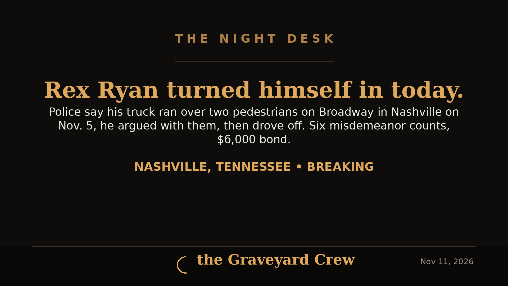

November 11, 2026 · 2 min read
Rex Ryan surrenders in Nashville, charged in Broadway hit-and-run that injured two pedestrians

Headline card by The Night Desk
Rex Ryan surrenders in Nashville, charged in Broadway hit-and-run that injured two pedestrians
Former NFL head coach Rex Ryan surrendered himself to police in Nashville on Nov. 11, according to a statement from the Metro Nashville Police Department, and was booked into the Davidson County Jail on misdemeanor charges connected to a hit-and-run that injured two pedestrians.
Ryan currently works as an NFL analyst for ESPN, a role he has held since 2017. He was head coach of the New York Jets from 2009 to 2014 and of the Buffalo Bills in 2015–16, and earlier worked as a defensive and special teams assistant for the Arizona Cardinals in 1994–95 under his father, Buddy Ryan.
What police say happened on Nov. 5
According to the police account reported by the Nashville Tennessean, the two pedestrians were crossing Broadway from 4th Avenue before midnight on Nov. 5, with a walk sign showing, when a truck turned right from 4th Avenue and ran over both victims' feet and one of their legs.
The pedestrians took a photo of the truck's license plate, which police connected to Ryan.
Police said the vehicle kept going, then stopped for the red light at Broadway and Representative John Lewis Way, where the pedestrians waved down the driver. He stepped out of the truck to argue with them, got back in, and drove away, according to the police statement.
The charges
Ryan is charged with:
- Two counts of leaving the scene of an accident
- Two counts of failure to give information or render aid
- Two counts of failure to obey a traffic control signal
Bond was set at $6,000. The charges are misdemeanors and are allegations at this stage; Ryan has not been convicted of anything in this case.
Reporting contributed by Kirsten Fiscus of the Nashville Tennessean, via The Arizona Republic.
Source: The Arizona Republic — read the original report
← Back to latest stories